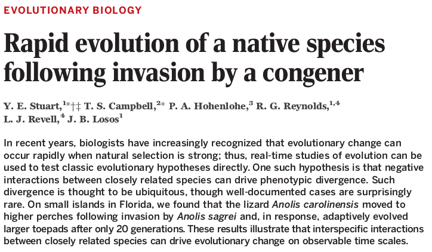
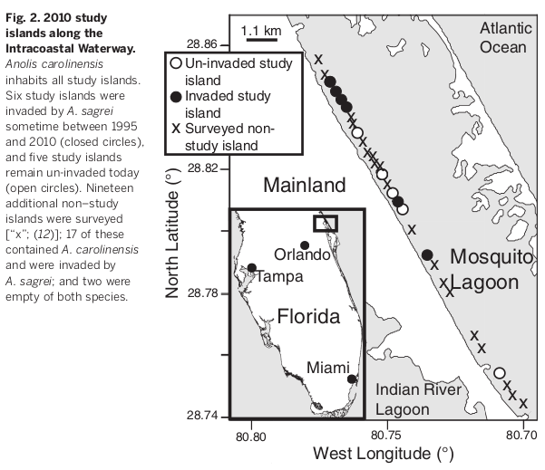
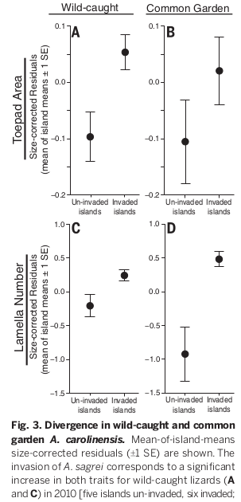

1. Review of Biodiversity and Extintcion
2. Defining Natural Selection and Fitness
3. Selection and Adaptation
"But they will go extinct one day, and the world will be none the poorer for it. Eventually, they will
be replaced by a dozen or a hundred new species that evolve laterAll organisms will eventually go extinct."
"But unlike those concerns, extinction does not carry moral significance, even when we have caused it"
"We should save whatever species and habitats can be easily rescued... We should do this to
create a stable, equitable future for the coming billions of people, not for the vanishing
northern river shark."
"If this means fewer dazzling species, fewer unspoiled forests, less
untamed wilderness, so be it. They will return in time"
Adaptation: a characteristic that enhances (or enhanced) the survival or
reproduction of organisms that bear it, relative to alternative character states.
By definition, an adaptation is a trait that evolved by natural selection.
Natural selection: any consistent difference in fitness among
'different classes' (e.g., genotypes, organisms) of biological entities based
on their phenotypes.
Fitness: The number of offspring an individual leaves in the next generation
by survival and reproductive success. Or, fitness can be measured as multiple components
from multiple life stages (i.e., are your children also fit?). We will further refine
this definition next class.
It explains the apparent design that we see in nature. And it explains it as the
outcome of a mindless process with no goal, just like gravity, or erosion. Adaptations
arise from natural selection causing differential replication of heritable variants.
There is no question that adaptations occur in nature. We can even observe their
evolution over short time periods: herbicide, insecticide, and antibiotic resistance.
Changes in the distribution of trait of body size in fisheries and hunting.
- The jaws of snakes
- Succulent photosynthetic stems of cacti
- The long beak of hummingbird
But, how do we know that these are adaptations?
How to talk about adaptations/selection. We often use shorthand but this can sound
teleological or anthropomorphic in ways that can be misleading to the general public.
It is important to be aware of this and to recognize when and where it is appropriate
to further define your meaning.
To say "selection favors this..." or "selection is a force that..." is shorthand for
the descriptive process of natural selection as a mindless force.
Natural selection can occur without causing evolution (e.g., no heritability of selected trait),
and similarly, evolution can occur without natural selection (e.g., genetic drift changes allele
frequencies by chance).
Natural selection happens anytime that a non-random set of entities differ in fitness. For evolution
to happen, the non-random variation affecting their fitness must be heritable.
The term was coined by Darwin to contrast with "artificial selection".
We used the term 'entities' for natural selection earlier, why?
Because not only individuals experience selection. Genotypes (combinations of genes)
or individual genes (in sexual organisms) can exhibit differences in fitness owing
to heritable variation (alleles) that affects their replication to the next generation.
Selection can thus act on gene copies in a population, combination of gene copies in
a population (genotypes), individuals in a population (classic concept of selection),
subsets of individuals in a populations (e.g. particular sex determination);
or even on different populations (group selection; thought to be less common).
Most interestingly, selection can act in antagonistic ways at different levels, creating
genetic conflicts. For example, between nuclear and mitochondrial genomes, between genes
and individuals, or between sexes.
Selfish genetic elements are segments of DNA or RNA that spread in a population by natural
selection regardless of their effect on individuals. This is most recognizable when they
cause genetic conflicts, such that they are detrimental to the individual. Examples are
transposable elements (TEs). These often have either no effect on fitness, or only slightly
deleterious effects, and thus can accumulate in genomes. They spread not only by replication
of the genome itself (i.e., organismal reproduction) but also by copying and pasting within an individual.
Any gene at which a particular allele is more successful than an alternative can be
viewed as a "selfish gene". By viewing genes through this lens we can better understand
the evolution of many puzzling traits that are difficult to explain by selection at the
organismal level alone.
For example, altruistic behavior is unlikely to evolve through selection on individuals,
since individuals are expected to maximize their own fitness. However, if multiple individuals
are likely to share the same gene copies, for example, because they are siblings, then an
allele at a gene that makes siblings more likely to cooperate may be more fit than an
alternative allele, if it leads the siblings as a group to leave more offspring (more copies of
that gene copy) to the next generation. This is termed kin selection.
The expected outcomes of kin selection, or group selection, on the spread of an allele in
a population can be mathematically modeled. Would a new allele with effect X increase in
frequency? Would a cheater allele that subverts X increase in frequency? Under what conditions
might X versus Y evolve? We will learn about such models in the next lesson.
How can we tell something is an adaptation? What are the alternative explanations?
Selection on one trait can have side effects on the distribution of another. For example, in Figure 3.13 a children's toy contains a sieve for marbles of different sizes. The different sized marbles also happen to be different colors. The sieve separates marbles based on size (selection based on size) but incidentally this also leads to separate by color, becaues the two are linked. We will learn later about how traits can be "genetically linked", or unlinked.
This is important to understand. Not all features of an organism are adaptations -- i.e., a result of natural selection. Many may have evolved by random genetic drift, or, they may have been pulled along because they were linked to other genes that were under selection. It is easy to come up with plausible stories for why a trait may have been adaptive. In many cases, these stories should be tested before they are believed.
Why are adaptation hard to identify? It can be hard to imagine all of the possible alternative states that a character may exhibit, whereas it is easy to come up with a plausible adaptive story for its evolution. There are four main alternative explanations for the evolution of organismal features that do not require them to be adaptations: ... LIST THEM HERE.
A trait may be necessary due to physics, chemistry, or constraints. Example: Hemoglobin
is red b/c of chemistry, not due to selection for blood to be red in color.
The classic case of the Spandrels of San Marco described by Gould and Lewontin.
The majority of genetic evolution may occur by random genetic drift, with only a small proportion of genes experiencing selection at any time. While this process can explain the fixation of many alleles, it cannot readily explain the evolution of complex traits. However, variation in trait values, such as a random drift over time in the shape or size of an existing feature, may be common.
The case of the colored marbles and the sieve. Selection on one trait can carry along another trait if the two are correlated/linked.
A trait may exist in an organism because it evolved in its ancestor, either as
an adaptation or not. All organismal traits are inherited from ancestors and
then may be later modified.
If the trait is long-removed from the ancestor in which it arose, it is less
clear whether it is an adaptation. Why do humans have live birth instead of laying eggs?
Why do birds have wings? These traits arose in their ancestors. We would need to
test hypotheses about whether they are adaptations.
This can be the most challenging to understand...
Complexity: why does a complex trait exist and not something simpler?
Highly complex features likely involve costs, and are expected to degrade unless maintained by selection.
Design: corresponds with optimized models: aerodynamics, heat dissipation, camouflage. Similarity with a theoretical optimum model is highly unlikely to evolve by random genetic drift.
Experiment: show that a trait is better than a modified version of it. Paint a peacock's feather,
shave a hedgehog, etc. Then measure its relative fitness. While this shows evidence that a trait is
more fit than one or a few alternatives, it cannot test all other alternatives that could have evolved.
Comparative method: Phylogenetic patterns can reveal
Imperfections: Selection acts on existing variation, not from scratch, and thus often
finds imperfect pathways to solutions
Why do some organisms adapt to environmental pressures while others do not?
Lack of genetic and functional variation
Biased perspective of observer
Competition and character displacement
Stuart et al. 2014 show evidence of rapid adaptation driven by character displacement in Anolis lizards.
  
Consider a widespread species distributed over a range of habitat types. If
a novel trait increases in frequency within one type of habitat, where it
increases local fitness, then we would describe it as an adaptation.
However, if the trait then spreads to other populations across the species, and
eventually fixes everywhere, regardless of of the habitat type the population
occurs in, is it still an adaptation? It does not increase fitness in these
alternative environments.
Which lines of evidence would or would not support this trait as evidence of
an adaptation?